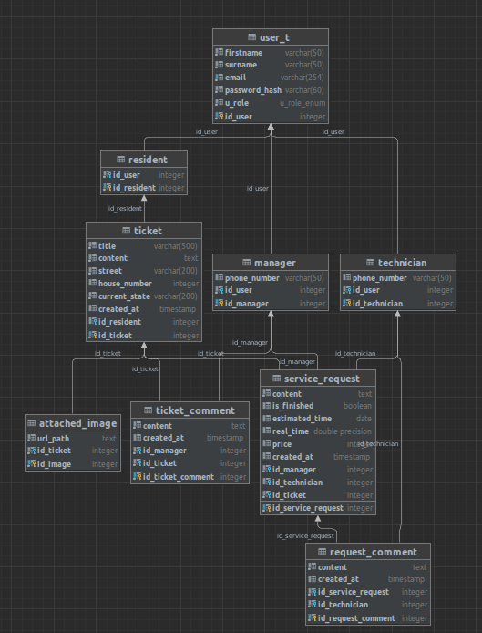
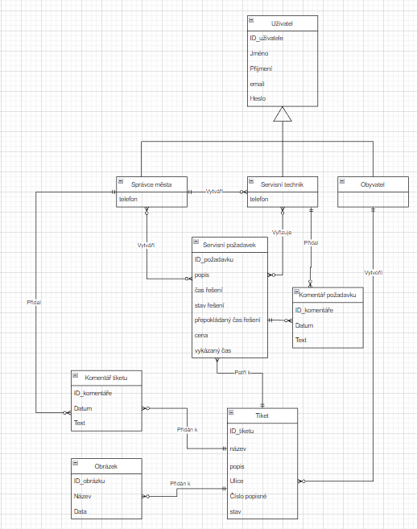

Chytré město
- Autoři
- Vilém Gottwald
xgottw07@stud.fit.vutbr.cz
- Pavel Tetauer
xtetau00@stud.fit.vutbr.cz
- Daniel Zmrzlý
xzmrzl00@stud.fit.vutbr.cz
- Popis činnosti v týmu
- Práci jsme si vždy rozdělili po společné schůzce a snažili se ji splnit do určitého deadlinu, což se nám ve většině případů povedlo.
Každý z členů týmu se nějakým způsobem podílel na všech částech aplikace ať už v prvotní implementaci či v pozdějších drobných úpravách.
- URL aplikace
- https://iis-town-issues.herokuapp.com/
Uživatelé systému pro testování
V tabulce jsou uvedeni zástupci všech rolí.
| Login | Heslo | Role |
|---|
| admin@auto.cz | heslo | Administrátor |
| manager1@auto.cz | heslo | Manažer města |
| technician1@auto.cz | heslo | Servisní technik |
| technician2@auto.cz | heslo | Servisní technik |
| resident1@auto.cz | heslo | Obyvatel města |
| resident2@auto.cz | heslo | Obyvatel města |
Video
https://youtu.be/-DJrCtWwa-0
Implementace
Webová aplikace je implementována v jazyce Python verze 3.10 za použití frameworku Flask. Pro hosting byla zvolena cloudová platforma Heroku, protože podporuje Pyhton i SQL a nabízí bezplatný program pro studenty. Aplikace využívá návrhový vzor Model-View-Controller.
Samotá implementace je rozdělena do čtyř modulů main, tickets, users a service_requirements.
Model
Model aplikace je vytvořen za použítí knihovny umožňující objektově relační mapování - Flask SQL alchemy.
Jednotlivé řádky tabulek databáze jsou mapovány na objekty tříd definovaných v souboru model.py. Objektový přístup k databázi umožňuje pohodlnější a přehlednější práci s databází a zamezuje SQL útokům.
Za účelem čistoty kódu a zjednodušením přístupu k databázovým objektům byla vytvořena samostatná vrstva, která implementuje veškeré využívané databázové operace.
Tato vrstva jsou rozděleny do tří souborů s názvy service uvnitř jednotlivých modulů:
- /TownIssues/tickets/service.py - databázové operace pro práci s tickety
- /TownIssues/users/service.py - databázové operace pro práci s uživateli
- /TownIssues/service_requests/service.py - databázové operace pro práci se servisními požadavky
View
Pohledy jsou realizovány pomocí šablon frameworku Flask. Tyto šablony umožňují snadné tvoření výsledných html stránek pomocí systému Jinja2.
Jednotlivé šablony jsou uloženy ve složce /TownIssues/templates. Formuláře jsou definovány pomocí knohovny WTForms, která umožňuje nejen definici formulářů, ale také jejich následnou validaci uvnitř jednotlivých funkcí controllerů controllerů.
Formuláře jsou v jednotlivých modulech uloženy v souboru forms.py.
Controller
Logika aplikace se nachází v controllerech umístěných uvnitř každého z modulů, ty zpracovávají příchozí požadavky a pomocí šablon generují příslušné odpověďi.
V aplikaci existují následující controllery:
- /TownIssues/main/routes.py - přesměrování uživatelů s různými rolemi na jim příslušící domovské stránky
- /TownIssues/users/routes.py - logika registrace, přihlášení a správy uživatelských účtů
- /TownIssues/tickets/routes.py - vytváření, správa a přidávání komentářů k jednotlivým tiketům
- /TownIssues/service_requests/routes.py - přidávání servisních požadavků k tiketům a manipulace s nimi
Databáze
Jako databázi jsme zvolili postgreSQL, aplikace by však díky použití sady nástrojů SQL alchemy fungovala s kteroukoliv SQL databází.
Na základě vytvořeného ER diagramu jsme vytvořili skript pod názvem database.sql, který vytvoří schéma databáze a vloží do ní testovací data.
Zmíněný ER diagram a schéma databáze vygenerovaný pomocí DataGripu můžete vidět na obrázcích níže:
Schéma databáze

ER diagram

Hesla
Hesla jsou do databáze vkládána jako kryptografický hash vytvořený knihovnou BCrypt. Ta také umožňuje ověření shodnosti zadaného hesla s již existujícím hashem.
Instalace
- Nejdříve je nutné vytvořit PostgreSQL databázi,
- následně v ní spustíme inicializační skript database.sqlb>, který vytvoří schéma DB a vloží demonstrační data.
Postup instalace aplikace je následující:
- Vytvoření virtualního prostředí: python3 -m venv .venv
- Aktivace virtuálnního prostředí: source .venv/bin/activate
- Instalace závislostí: pip install -r requirements.txt
- Konfigurace připojení k DB: export DB_CONN_STR='<DB connection string>'
- Spuštění aplikace: gunicorn run:app
Známé problémy
Jediným známým nedostatkem, je způsob filtrování tiketů a uživatelů v pohledech zobrazujícíh jejich seznamy pomocí stránkování.
Filtrace je implementována pomocí javascriptu, takže filtovány jsou pouze položky obsaženy na právě zobrazované stránce.
Vzhledem k tomu, že filtrace není v zadání projektu vyžadována, jsme se rozhodli ji implemetovat takto, abychom si vyzkoušeli práci s javascriptem.
V opačném případě by bylo filtrování implementováno pomocí odesílání hodnot formulářů skrze get požadavky na server, který by vyfiltrované záznamy vracel v odpovědi.